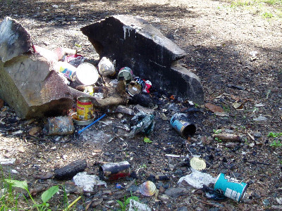
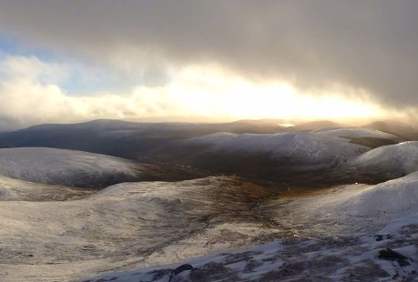
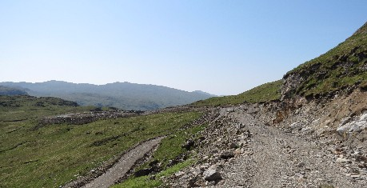
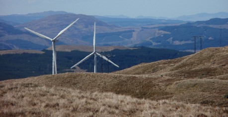
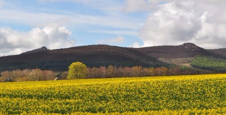

Latest Development
- Home
- More Info
- Latest Development

Tak It Hame is a Mountaineering Scotland campaign that says what it means: encouraging the mountaineering community, and others, to remove litter and plastic from our hills and crags.
Tak It Hame aims to make a difference.
We encourage everyone taking to the hills and climbing the crags to do a little on every trip, individually, or as part of a group or club outing. And to show others too: tell the world that we can all do something. Many of us already do, but the litter still accumulates. We need more people to do the same. The message is: can you bring back more than you took out?

We get approached every week by government agencies, local authorities, national parks and developers to comment on proposed wind farms designed to generate more than 50MW. Our decision to respond or object is guided by specific criteria, reflecting our vision, Respecting Scotland's Mountains. We only object to a very small proportion, but if permitted, they could have a huge impact on the wildness of some cherished locations.

We urge local authorities and Scottish national parks to use their powers to ensure the impact of hydro scheme scars on upland areas is mitigated by developers. However, after recent correspondence with planning authorities it is clear that some lack capacity to monitor and follow up these issuess.

We have quantified the impact wind farms located in mountain landscapes have on hill-walking behaviour for the first time. In a survey of our members, over two thirds stated that they prefer not to see wind farms when in the mountains and 22% said that they avoided areas with wind farms when planning their activities.

We have lent our support to the Save Bennachie Alliance which is working to protect one of the north-east's most iconic hills from several proposed route options for the dualling of the A96 near Inverurie.